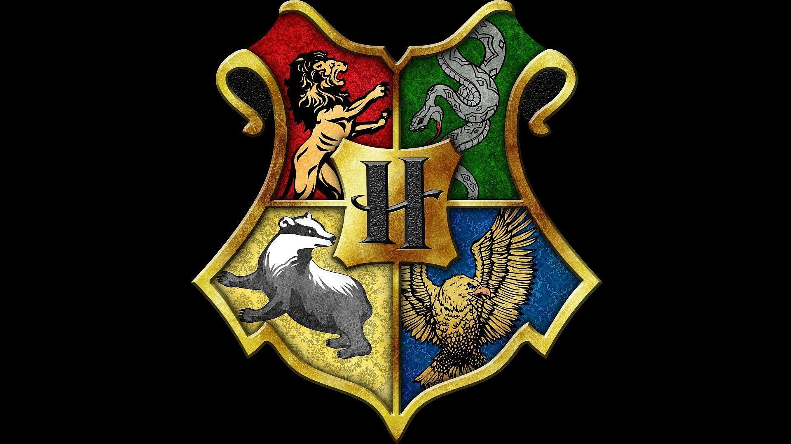

Hogwarts School

Hogwarts was founded around 990 A.D. by four of the greatest wizards and witches of the age: Godric Gryffindor, Helga Hufflepuff, Rowena Ravenclaw, and Salazar Slytherin. They each represented an aspect of personality that they wanted to bring out in new students. However, shortly after founding the school, Slytherin had a falling out with the other founders about blood purity, and wanted to admit only pure-blood students. He felt pure-blooded students deserved to learn magic, and those of other ancestry such as Muggle-borns and Half-bloods, were unworthy.
© Digital wizarding world 2021